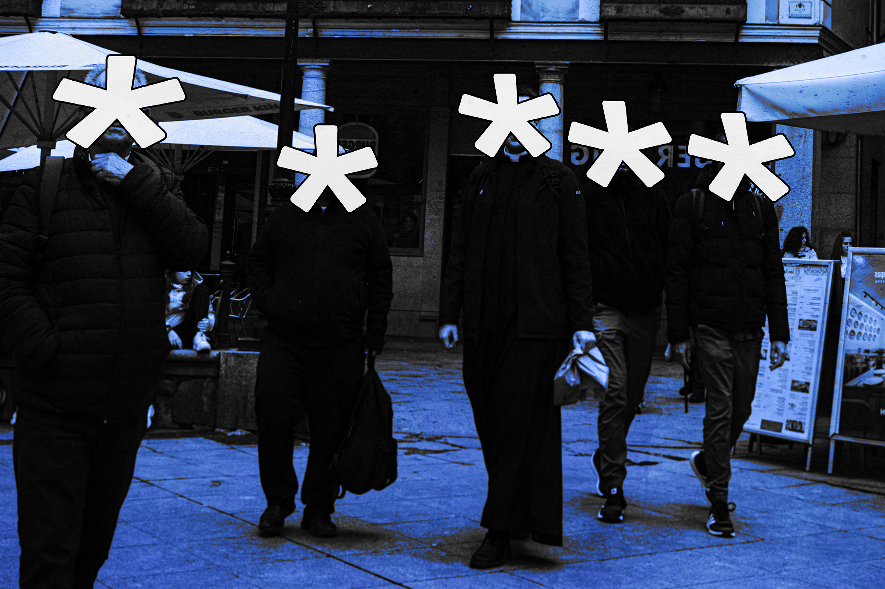

Hello! Welcome to my portfolio. I am an aspiring graphic designer and documentary photographer. Visually I operate around a few core ideals, these being distortion, digital rot, and imagery linked to conflict within recent memory. Thematically, these articulate the concepts disjunction, and a dissolution of Sobornost.
